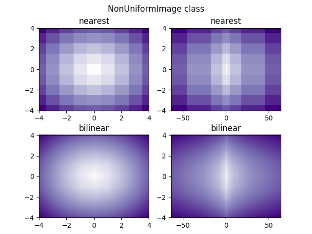

Version 2.2.0
This illustrates the NonUniformImage class. It is not available via an Axes method but it is easily added to an Axes instance as shown here.
import numpy as np
import matplotlib.pyplot as plt
from matplotlib.image import NonUniformImage
from matplotlib import cm
interp = 'nearest'
# Linear x array for cell centers:
x = np.linspace(-4, 4, 9)
# Highly nonlinear x array:
x2 = x**3
y = np.linspace(-4, 4, 9)
z = np.sqrt(x[np.newaxis, :]**2 + y[:, np.newaxis]**2)
fig, axs = plt.subplots(nrows=2, ncols=2)
fig.subplots_adjust(bottom=0.07, hspace=0.3)
fig.suptitle('NonUniformImage class', fontsize='large')
ax = axs[0, 0]
im = NonUniformImage(ax, interpolation=interp, extent=(-4, 4, -4, 4),
cmap=cm.Purples)
im.set_data(x, y, z)
ax.images.append(im)
ax.set_xlim(-4, 4)
ax.set_ylim(-4, 4)
ax.set_title(interp)
ax = axs[0, 1]
im = NonUniformImage(ax, interpolation=interp, extent=(-64, 64, -4, 4),
cmap=cm.Purples)
im.set_data(x2, y, z)
ax.images.append(im)
ax.set_xlim(-64, 64)
ax.set_ylim(-4, 4)
ax.set_title(interp)
interp = 'bilinear'
ax = axs[1, 0]
im = NonUniformImage(ax, interpolation=interp, extent=(-4, 4, -4, 4),
cmap=cm.Purples)
im.set_data(x, y, z)
ax.images.append(im)
ax.set_xlim(-4, 4)
ax.set_ylim(-4, 4)
ax.set_title(interp)
ax = axs[1, 1]
im = NonUniformImage(ax, interpolation=interp, extent=(-64, 64, -4, 4),
cmap=cm.Purples)
im.set_data(x2, y, z)
ax.images.append(im)
ax.set_xlim(-64, 64)
ax.set_ylim(-4, 4)
ax.set_title(interp)
plt.show()